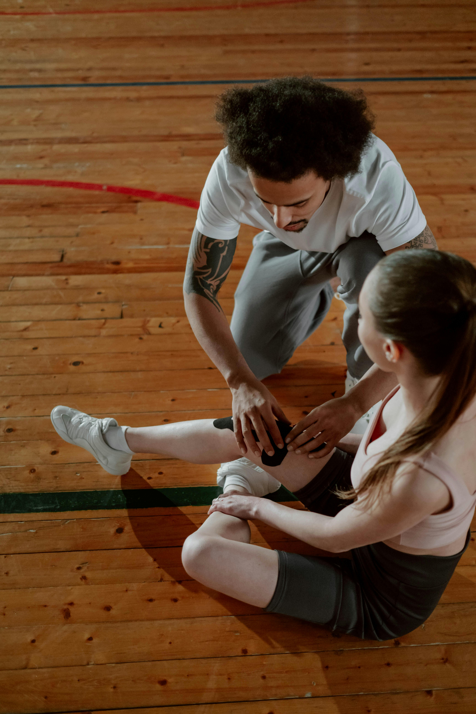
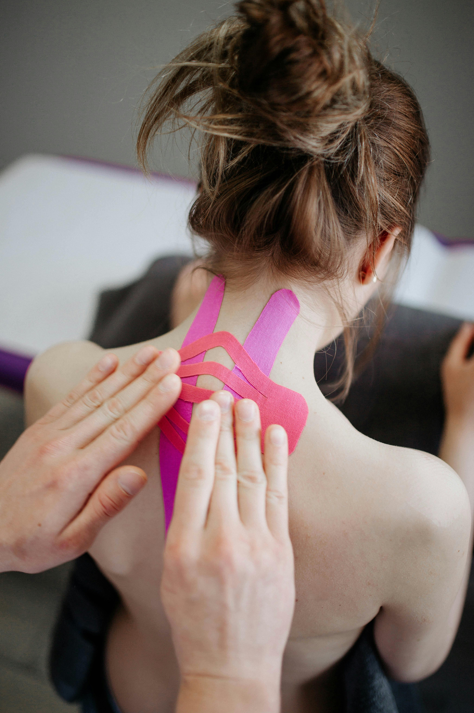

En la asociación venimos trabajando hace muchos años en brindar el mejor servicio y apoyo para que todo el que llegue al lugar reciba la mejor atención y logre salir adelante
Hemos aprendido mucho a lo largo de los años y eso lo marca nuestra trayectoria desde que abrimos en 2010 en nuestra anterior sede.
 Hoy contamos con un personal de más de 20 personas contando kinesiologos y colaboradores, y buscamos seguir ampliando nuestro equipo a medida que vayamos creciendo y explorando nuevos horizontes.